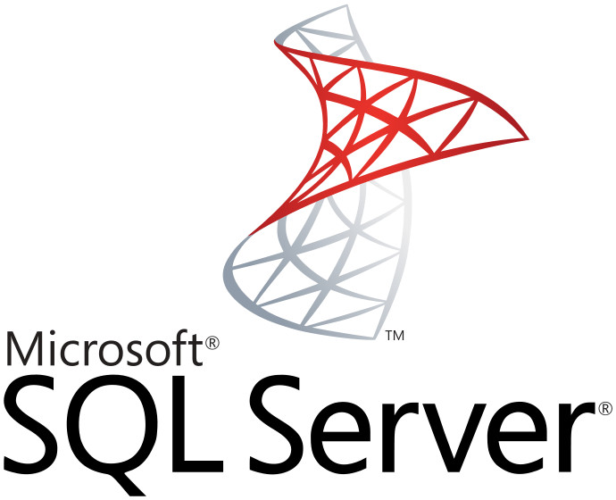
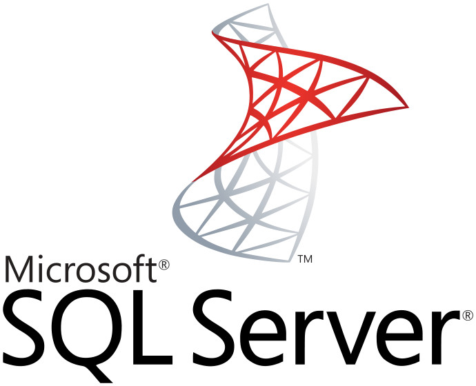
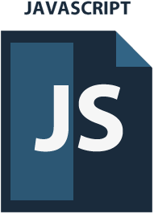
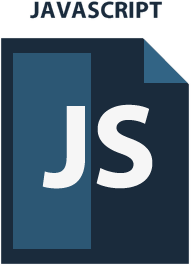

Calle Frederick Terman, 3 C.P. 29590 Málaga
Parque Tecnológico de Andalucía
Parque Tecnológico de Andalucía
Calle Marie Curie, 10 C.P. 29590 Málaga
Parque Tecnológico de Andalucía
Parque Tecnológico de Andalucía
 



 



Certificaciones profesionales


Prácticas en empresas del PTA y Málaga
Dos periodos (380 horas) de prácticas en empresas
1. Desde marzo a junio
2. Desde septiembre a diciembre
Empresas colaboradoras

Empresas colab. en la UE